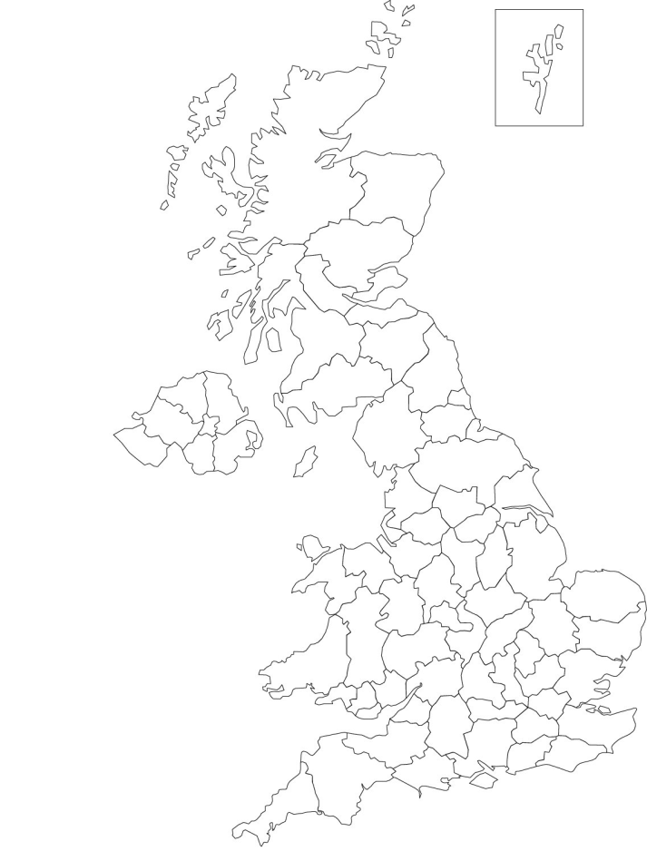
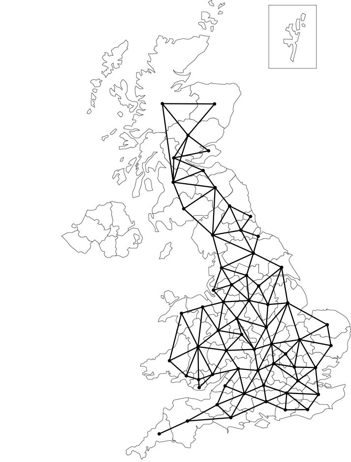
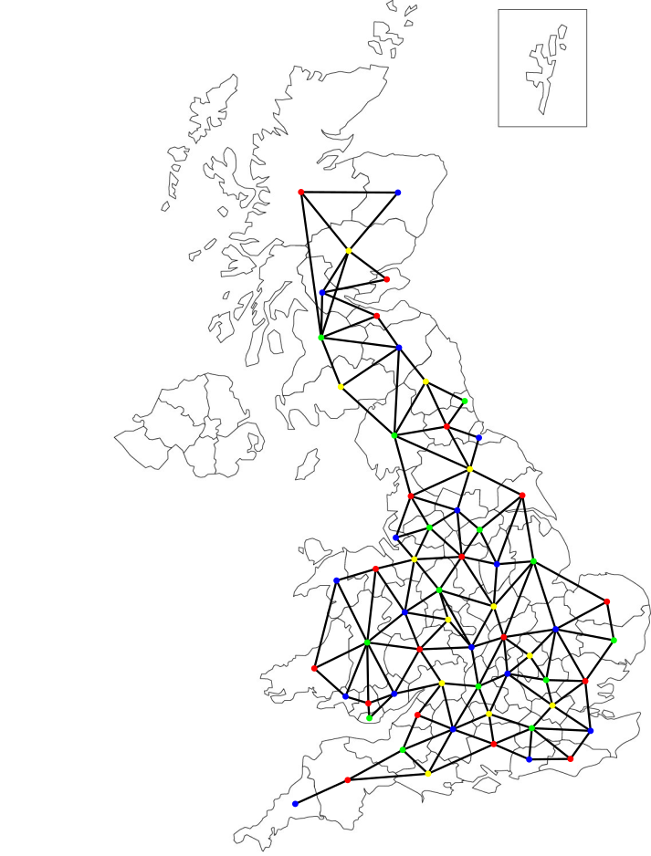
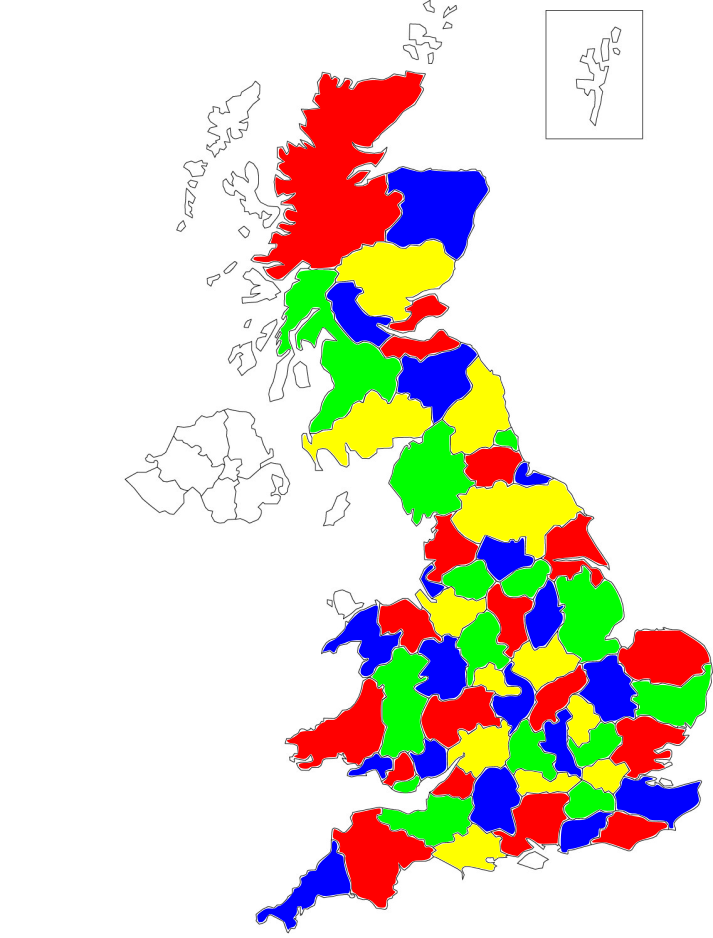

Labelling and colouring
More definitions
Reachability
-
A vertex \(b\) is reachable from vertex \(a\) if there is a path from \(a\) to \(b\).
-
Any vertex is always reachable from itself by a path of length \(0\).
-
It is not necessary for a vertex in a graph to have any edges connecting it to other vertices, or for all parts of a graph to be reachable from all others.
-
For example, here
-
\(a\) is only reachable from \(b\), \(c\) and \(d\);
-
\(e\) is only reachable from \(f\);
-
\(g\) is not reachable from any other vertex.
-
Components
-
A subgraph of a graph \(G = (V,E)\) is a subset of the vertices and the edges which connect them.
-
A component of a graph is a connected subgraph that is not part of any larger connected subgraph.
-
For example, this graph has three components.
Directed graph (digraph)
-
A directed graph (or digraph) is like the graphs we have seen except that the edges have a direction, i.e. the set \(E\) is made of ordered pairs of vertices \(\{ (a,b) \mid a,b \in V\} \).
-
For example,
Labelling
Edge-labelling
-
We have seen graphs with the node labelled, for example with letters, which is a vertex-labelling.
-
We can also label the edges, an edge-labelling.
-
If the edges are labelled with positive numbers, we can call this a weighted graph.
Labelling
-
Consider a graph \(G = (V, E)\).
-
Suppose we have a set, \(L\), of labels.
-
A vertex labelling of a graph is a function \(V \rightarrow L\).
-
An edge labelling of a graph is a function \(E \rightarrow L\).
Magic squares
Magic squares
Magic squares
-
A magic square is a square grid of numbers such that all columns, rows and diagonals sum to the same amount, which is called the magic constant.
-
A semi-magic square has this property for rows and columns, but not necessarily diagonals.
Lo Shu magic square
-
This is a famous magic square, called the Lo Shu magic square.
What is this magic square doing in the graph theory section?
Label each row and column with a letter
Now draw a graph
-
A complete bipartite graph.
Label the graph
-
Label edges with the value where that row and column intersect.
Label the graph
-
Label edges with the value where that row and column intersect.
Vertex-magic graph
-
At each vertex, if you sum the values of the labels of its edges, you get the same number, 15.
-
This shouldn’t be a surprise, because this is the same property as the magic square.
-
Note we didn’t use the diagonals, so we only require a semi-magic square.
Vertex-magic labelling of other graphs
-
Label this graph so it has magic constant \(10\).

Vertex-magic labelling of other graphs
-
Label this graph so it has magic constant \(3\).
Magic vertex labelling
-
We have seen a vertex-magic labelling is an edge labelling with integers such that the sum of the labels at any vertex is the same constant.
-
An edge-magic labelling is a vertex labelling with integers such that the sum of the labels connected by any edge is constant.
-
A total-magic labelling is one that has labels on both edges and vertices so that the sum of the labels on any vertex and its connected edges sums to the same value.
-
A Zero-sum magic graph is a graph where the edges can be labelled such that the vertex-magic constant is \(0\).
Colouring
Graph colouring
-
Let \(C\) be a set of labels called colours.
-
A colouring of a graph is a vertex labelling \(V \rightarrow C\), such that no two adjacent vertices have the same colour.
-
A graph is \(k\)-colourable if we can use \(k\) colours to give a colouring.
-
A graph \(G\) that is \(k\)-colourable, but not \((k-1)\)-colourable, is called \(k\)-chromatic and we say that it has chromatic number \(\chi (G) = k\).
-
The colours needn’t be actual colours, but they can be. What’s important is that labels are assigned to vertices so that no adjacent vertices have the same label.
Complete graphs
-
Complete graphs need as many colours as they have vertices. So \(\chi (K_n) = n\).
Bipartite graphs
-
A bipartite graph \(G\) is \(2\)-colourable, i.e., \(\chi (G) = 2\).
-
e.g. the graph \(K_{5,4}\).
Four Colour Theorem
-
No more than four colours are required to colour the regions of any map so that no two adjacent regions have the same colour.
Maps

Credit: Alex Corner.
Four Colour Theorem
-
Earlier we saw graphs that require \({\gt}4\) colours, for example \(K_n\) for \(n{\gt}4\).
-
The Four Colour Theorem only applies to loopless planar graphs.